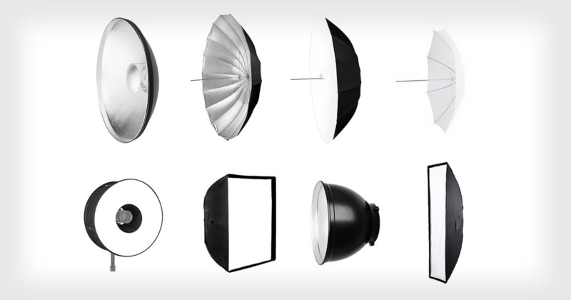
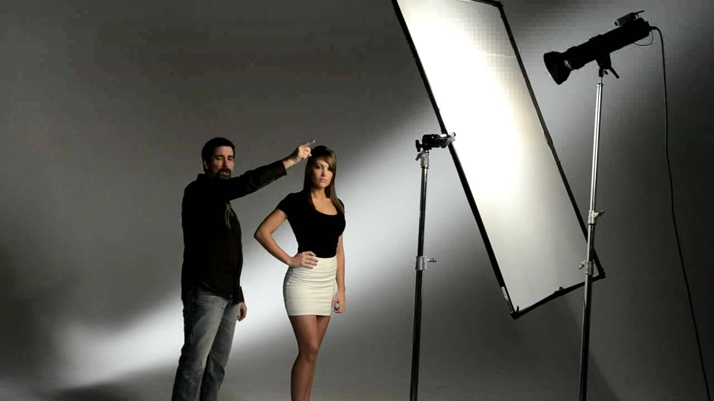

Part 1
We’re going to present three different setup options ordered by increasing complexity. Keep in mind that more complex setups require a higher budget, more physical space, and more time to put in place. The higher setup time is one-off. Actually, in all three options it’s very quick and easy to start rolling once everything has been correctly configured for the first time.
Option 1 - Home Setup with a Webcam
The need of expensive gear to produce high quality images is a myth. A lot can be achieved just with proper lighting.

Knowing the difference between hard and soft lighting will dramatically improve your image.
- Hard light casts sharp, strong, dense (i.e., dark), hard-edged shadows. This is typical of small light sources. You want to avoid hard lighting, because it’s difficult to manage, it creates ugly shadows under the chin and around your nose, and unless you are a top model, imperfections in your skin will stand out.
- Soft light makes soft shadows, with no defined edge, no shape, and no density. This is typical of large light sources. Soft lighting is desirable, because it’s easier to control and will generally make you look better.
One fundamental concept to understand is that the larger the light source relative to the subject, the softer the light (and thus the shadows) will be.
Notice the “relative”? It’s not the absolute size that matters, but the apparent size: how the size of the light source is perceived from the subject’s perspective. The sun is a very big light source, but being very far from us, it acts like a point light source, casting hard shadows (on a sunny day with a clear and blue sky). A cloudy day is soft light, because the clouds diffuse the sun light, creating a larger light source.
What does that imply for you? Put simply, you should avoid (buying) a small light source as your key light (i.e., the one that will light up the subject’s face)! Mini LED panels (like the Aputure MC series) won’t work, unless you place them very close to the subject’s face and frame your scene very tight. However, these mini panels are extremely useful for creative purposes in more complex lighting setups (lighting your background with a splash of color, for instance).
For the sake of simplicity, we assume that you will be the presenter (the subject) in your video.
Option 1.A
Luckily, one of the best large light sources is free and available to everybody - the sun! You can achieve a very nice, soft lighting by staying in front of a large window - unless the sun is low and comes straight into your window, obviously.
Always have the window in front of you, not behind, and place your webcam between yourself and the window, front-facing. Make sure your webcam is at eye-level so that you can make eye contact with the attendees.
If the light is too harsh, a white translucent curtain might help to diffuse it.
If your laptop doesn’t come with a built-in camera, the Logitech C920 is a good and reliable external webcam.
One aspect that is often underrated is audio. This is especially true for teachers, who will often show slides while talking and may record at home, in non-treated rooms for acoustics or close to noise sources. If you have a limited budget and need to choose how to invest your money, I’d highly suggest spending it in a good microphone instead of a new camera.
If your laptop built-in mic is too noisy or poor quality, you can use a headset with a microphone, or your phone’s earbuds (which often have a mic for phone calls too).
Option 1.B
A cheap yet effective way to improve your image quality is to use your smartphone instead of a webcam. Modern smartphones usually have better cameras than most built-in laptop webcams.
Just use a pile of books to place your smartphone on your desk and at eye-level. Make sure to turn your smartphone in landscape orientation. Alternatively, you can use a Gorillapod and attach your smartphone to whatever surface you want. Connect your smartphone to the computer via USB and use one of the many apps available to turn your smartphone into a webcam. We suggest Camo for iPhone and iPad and iV Cam for Android.
Alternatively, you could record yourself directly with your phone and import later the footage to your PC for editing. Apps like Filmic Pro unlock all your smartphone’s camera potential and advanced features like flat or LOG gamma curves. In this case, you could either connect your microphone to the smartphone or record the audio separately from the video, connecting the microphone to your PC and using Audacity or similar software. We explain how to sync an audio track to the footage in the second part of this guide.
Option 1.C
Another option is to record your webcam’s stream and audio simultaneously via OBS. OBS is a free and open source software for live streaming that also allows video (and audio) recording. Besides recording your webcam, you may also use it to easily record your screen.
Option 2 - Advanced Home Setup
Maybe you can’t rely on the sun, or you don’t have access to a large window, or maybe you want to record after sunset. If you are looking for a consistent video quality and you want to appear more professional (without a headset on your head), you will need:
- One or more continuous light sources
- An external USB microphone
Lighting Gear
Artificial Lights
If you are not going to use the sunlight as your primary light source, you will need artificial light.
You should not use your desk lamp to light up your face on video. That’s because not only “normal” bulbs are not powerful enough, they will also mess up the colors in your video.
What does that mean? It’s important to take into account the color temperature of illumination. You should avoid too warm or too cold lights, and you should definitely avoid mixing both of them in the same shot. But this is not the end of the story.
When we said that the sun is one of the best light sources available, we meant it! That is because daylight is considered full-spectrum light, meaning that it covers the entire visible spectrum, from infrared to almost ultraviolet. Therefore, daylight (the midday sun with a blue sky, with a color temperature measured at 5600K) is considered a benchmark in photography and videography. Good quality lighting equipment should be full-spectrum and daylight-balanced, meaning that it emulates the quality of natural light and it’s tuned to work at 5600K. Nowadays, some LED lights are also getting closer to full-spectrum, but these can get quite expensive. Using full-spectur lights ensures that you get no color cast in your image.

For your main light (or key light), the one that will be lighting your face, you should try to get a source as close as possible to daylight. Try to avoid incandescent light (usually way too warm, like a candle light). Avoid at all cost fluorescent light. Most video lights can be mainly HMI (hydrargyrum medium-arc iodide), tungsten or LED. You will be most likely to use LED lights since they are cheaper and widely available today.
We use so-called CRI and TCLI ratings to compare the “quality” of light sources: just remember that the higher these numbers are, the better. Ideally, they should be at least above 90.
As mentioned previously, you want a large light source for softer shadows. There are two ways you can get one. You can either buy a large light source, or a small light source and some sort of diffusion for it.
- A large light source is always large and soft light. You cannot make it smaller. It’s also probably big and heavy.
- A small light source, besides being lighter, can make both hard light, if used standalone, or soft light, if used with a diffuser (also called light modifier). We talk more about these in Option 3.
The Elgato Key Light is a relatively big LED panel and by far one of the easiest options available to set up. It can be attached to any desk and controlled via a mobile app or PC. It works great for fixed desk setups and if it’s relatively close to the subject anyway. However, it has some downsides too: it’s not very powerful and you cannot use it in any other configuration (e.g., standing, away from the desk).
Rollable LED panels like the Falcon Eyes RX-24TDX are a valid, more versatile, lighter yet more expensive alternative. These can offer a large soft light especially if coupled with a softbox (like the Falcon Eyes RX-24SB+HC). Softboxes for this kind of LED panels are way thinner than the traditional ones, so this is a great solution for small rooms.
Ring lights (like those from Neewer) are quickly becoming popular among streamers. The light created is between that of a point light source and a larger, diffused one, giving the image a wrapped, contrasted and dramatic look. Due to their peculiar shape, they make a unique circular catchlight in the subject’s eyes. These lights are best suited for beauty close-ups and are not very versatile: for best results the subject must stay close to it and should not move around too much.
Audio Gear
There are many different kinds of microphones and connectors.
USB Microphones
For this kind of setup, the easiest solution is to get a USB microphone (like the Rode NT-USB, the Rode NT-USB Mini or the Blue Yeti) and plug it into your PC. These microphones work great for casual recordings, however they are not very versatile and often offer inferior audio quality compared to XLR competition.
Option 3 - Studio-like Setup
To take your setup to the next level and achieve a professional look (and sound), you will need:
- A camera and a good (i.e., fast) lens (on a tripod)
- Professional lighting equipment (and some way to hold them)
- An XLR microphone and an audio interface
Camera Gear
Cameras
Most of the current still image cameras are capable of recording videos too. The main difference with a proper movie or video camera is how well the latter can handle heat (actually, they can do much more, but it’s not so relevant for our purpose). Cameras designed mainly to take still images will have their sensor to overheat after a while, when used to record videos. That’s why most of these cameras will have a time limit (often 20 or 30 mins) for their video recordings. No harm in most of the cases, and you will simply need to continue recording with a new take.
However, using still cameras as video cameras has some advantages too. Good-quality video cameras with interchangeable lenses and comparable sensor size are way more expensive than their still camera counterparts.
But why would you need interchangeable lenses? Most of the “premium look” that you are looking for comes from the lens, not the camera! More specifically, you will need a fast lens (i.e., a lens with a wide aperture) if you like a shallow depth of field or the bokeh effect: you will be in sharp focus while the background can be blurred, out of focus. This is visually very pleasing and can help focusing the viewer’s attention on the subject speaking.
If you had to choose, my advice is to spend more on a good lens rather than on a better camera. It’s okay to buy relatively old or used cameras, since most of the latest models only marginally improved some aspects that are not so relevant for us, like low-light performance. If you learn how to correctly light your scene, you will never need to shoot in low-light conditions. Not to mention that a good lens lasts forever, while cameras can be changed or upgraded after some years.
Most cameras can be split among two categories: DSLR and mirrorless cameras.
- A Digital Single-Lens Reflex has a mirror in it. Light passes through the lens, and then it reaches a viewfinder through some mirrors and/or prisms. When you shoot, the mirror flips up so that the light can reach the sensor and no longer the viewfinder.
- A mirrorless camera has no mirror in it. That’s the key difference. The light constantly hits the sensor, which is always-on, and you would frame your image through an electronic viewfinder (basically, a screen). Because of this, these cameras are usually smaller and lighter, although they are less energy-efficient.
It’s irrelevant what kind of camera you choose. They both work for our purpose. Just make sure that it can shoot full HD videos at 25fps or more, that it has a manual mode, a built-in microphone and/or a 3,5mm microphone jack input.
Lenses
Most lenses can be split between zoom lenses and prime lenses.
- A zoom lens can vary its focal length. This means that you can change the field of view, tightening or widening the scene.
- A prime lens has a fixed focal length. You can’t change the field of view unless you actually move the camera closer or further away from the subject (i.e., “zoom with your feet”) - although this has a slightly different visual effect than varying the focal length.
They can both work, however, we’d suggest buying prime lenses. That’s because they are easier to manufacture, and thus cheaper. Usually, you can find some fast prime lenses (i.e., prime lenses with a wide maximum aperture that allow for a more pleasing blurred background) at very affordable prices (like the Canon 50mm f/1.8 STM or Nikon 35mm f/1.8G). In contrast, any zoom lens with a comparable wide aperture would cost much more.
The focal length is measured in millimeters. The higher the number, the narrower will be the field of view. For instance, a 85mm lens looks much more “zoomed in”, narrower, than a 25mm one.
The lens aperture is measured with the f-number. The smaller the f-number, the wider the lens aperture (very counter-intuitive, I know). For instance, a 50mm f/1.8 lens has a much wider maximum aperture than a 50mm f/5.6 one, which implies a shallower depth of field (nicer blurred backgrounds) but also a better light-gathering capability. Imagine light passing through a hole: if the hole is larger, more light will pass through it. We won’t stress this aspect too much, because you will probably shoot your videos with artificial lighting and not in a dark room anyway.
So, which lens should you buy? It really depends on what you plan to shoot with it. You should take into consideration how wide you want your scene to be, how many people you will be shooting at the same time, how much of the background you will be including in your shot, and how big is the space available to you (how far you can place the camera from the subject).
Typical focal lengths for portraiture range from 35-50mm (called normal lenses, those that reproduce a field of view close to the human eye) to 200mm (often incorrectly labeled as telephoto lenses).
Just remember this: shorter focal lengths with the camera closer to the subject will show more of the background compared to longer focal lengths with the camera placed further away.
However, to make things even more complicated, depth of field depends not only on the lens aperture, but also on the focal length! Longer focal lengths allow for a shallower depth of field. In the next image, notice how the cactus stays relatively the same while the background changes dramatically.

As regards the lens aperture, go with the lens with the lowest f-number, if possible. Ideally, you’d want a wide-aperture lens (we also call it a fast lens). If you’re buying Canon or Nikon, I’d suggest their budget line of “normal lenses”: the Canon 50mm f/1.8 STM or the Nikon 35mm f/1.8G.
Tripods
Once you get your camera and lens, you will need some sort of support for them. The easiest solution is to buy a tripod. Any decently sturdy tripod will do the job. Their connection is universal, so they will work with any camera you buy.
Lighting Gear
As we said, there are two ways you can get soft light. We will now focus on the second option: using a smaller light source coupled with a light modifier.
Smaller light sources are more versatile but require some extra gear: a sturdier light stand and a diffuser mostly.
A relatively cheap option is the Godox SL-60W or the Neewer SL-60W LED. More advanced, high-quality lights are the Aputure LS C120D II, the Lupo Superpanel series, or the glorious, industry-standard Arri Skypanel series.
When choosing your light, just make sure of the following:
- That it’s not a flash or strobo light. These may be confused with continuous light sources because they look similar, but they are actually meant for studio photography, not video.
- It’s fanless. You want your light to be silent, especially if it’s close to your microphone.
- It has a Bowens mount. This is an almost-universal mount for accessories and diffusers. Often, you can’t mount diffusers on LED panels so you won’t need this mount.
Light Stands
If you have enough space and you can place your lights at an angle from the subject’s perspective, you can get any cheap light stand from Amazon. They will do the job, unless your light and modifier weigh a lot.
If you don’t have enough space to place a light stand close to the subject, but you still want the light to be close to them - or maybe right above the camera - you will need a special light stand with a boom arm. These are called C-stands and they are capable of supporting much heavier lights too. Through their arm, you can place the light away from their legs. Some of these stands may have wheels too.
Light modifiers
There are a lot of light modifiers out there. The underlying idea is to use them to shape the light according to your needs. The followings are some modifiers mainly used in photography - however, some of them can be used for video too. In cinema, much more expensive and elaborate solutions are involved.

As we said, you want the make the light bigger, so you will need any kind of diffuser to make it appear bigger. The most common ones for this purpose are umbrellas, softboxes, and scrims.
The easiest one to use and control is any kind of softbox (a regular square softbox, a stipbox, an octabox, a parabolic softbox…), like those from Godox.
Most modifiers directly attach to your light source, so when choosing one, make sure it has the same mount of your light source (hopefully a Bowens mount).
Some modifiers are away from the source, like flags and scrims which often are placed on their own stands. They are common in cinema and usually work better in bigger spaces as they have a larger footprint. You can see how a scrim is used to diffuse a point light source in the next picture.

One Last Note
You could easily spend a lot of money into your lighting equipment and still get poor results. Learning the basics of light and how to shape it would help you tremendously to get closer to the look you have in mind.
But that’s not all. Forget recreating the light setup of studio productions. Studios are big, and your room is probably small. This may sound trivial, but it’s actually very important because of light falloff.
Put simply, if your room is too small, the light coming from your source might bounce on the walls and affect dramatically your exposure in ways that you may not expect.
However, knowing this, you could use your walls to your advantage as actual light modifiers! Assuming that they are white, you could purposely point your source to the wall in front of you or to the ceiling to soften the light as if it was coming from a very large diffuser. Of course, you will lose any directional control over it and you will get a flat (and boring) lighting - but still better than hard lighting with some ugly shadows on your face.
Audio Gear
Camera Microphones
An alternative to USB microphones are those specifically built to work with cameras, like the Rode VideoMic. These have a 3,5mm jack output that can be inserted directly into the camera. This means that the audio is burnt into the footage, not on a separate track on your PC: quicker (you won’t need to sync the tracks), but dangerous too. It’s often a bit more difficult to monitor your audio in this way, and you run the risk of clipping your audio without even noticing.
Lavalier Microphones
Lavaliers - like the Rode smartLav Plus - are great if you are moving around, because they are always on you. They can be positioned very close to your mouth to minimize background noise, but they are usually more expensive compared to shotguns of similar quality. Their frequency response may not match the best XLR mics and they can also easily pick up clothes rustling.
XLR Condenser Microphones
To step up your game, you will need a microphone with a XLR connection. Because you will not be moving while talking, we suggest a shotgun mic, like the Rode NTG3 or the Sennheiser MKH416 (Rode NTG1 and NTG2 are also cheaper yet valid options). You should point it directly towards your face and relatively close to you. It will reject any sound coming from the sides or back. This ensures that you will be recording only the sound of your voice and no background noises.
But how would you connect this mic to your PC? You’ll need an external audio interface, with at least one XLR input and phantom power (condenser microphones require external power for their internal electronics, unless they run on battery too). If you will be recording only one microphone at a time, we suggest the Scarlett Solo by Focusrite.
This is by far the best-sounding, most versatile and future-proof solution (you can later buy a portable digital audio recorder for outdoor scenarios and still use the same microphone, for instance).
Optional Gear
A teleprompter is a useful addition to this setup. By using a clear sheet of glass in front of your lens, it allows you to read the script while talking without the need to ever look away from the camera. Actually, it has some more use cases too: you could use it as a monitor and see yourself while recording, or your attendees in a live call while always looking them in the eyes. Take a look at how this YouTuber configured his GlideGear TMP-100. Notice that you will need a small external monitor. However, you could also use your iPad or tablet for this purpose. There are some great apps that will allow you to do so, like PromptSmart. Bear also in mind that small teleprompters would work better with shorter focal lengths (wide angle lenses) because the camera can be placed closer to the subject speaking. Longer focal lengths require the camera to be placed further away, thus making it harder for the teacher to read from a teleprompter.
Putting All Together
Setting up the camera, lights and microphone each time may take some time, but some people managed to attach all the equipment on a single stand or desk, allowing them to start recording quickly when needed.
Please notice that these solution will only work if you intend shooting one person at a time. For interviews, shooting more people and/or using multicam setups, you will need a bigger studio. Moreover, all the light sources should be placed further away. This implies that these lights must be more powerful (inverse-square law, if you’re a geek).
Next Page